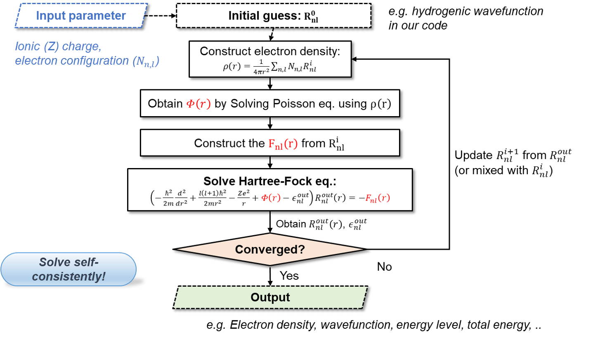
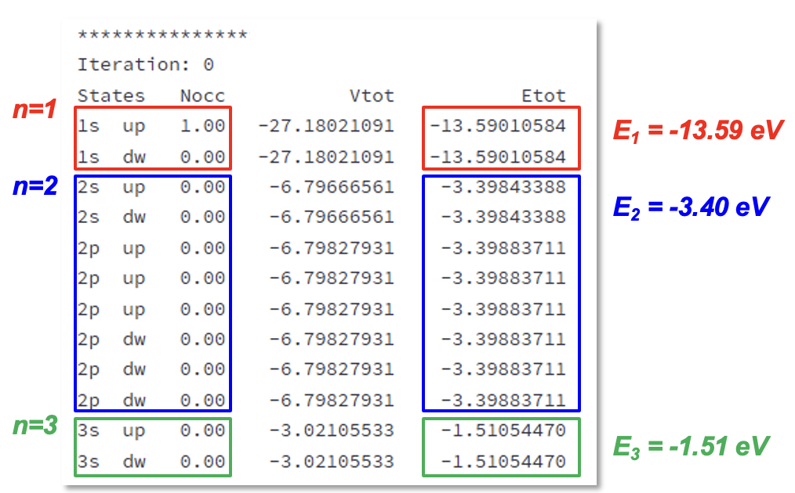
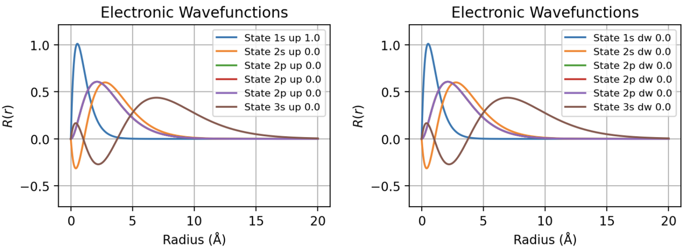
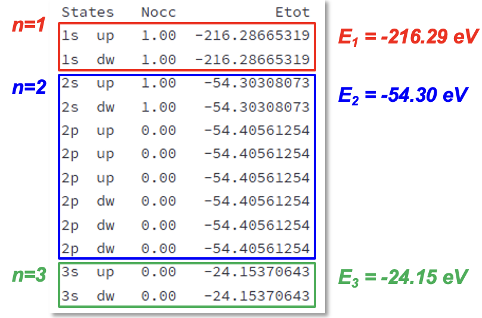
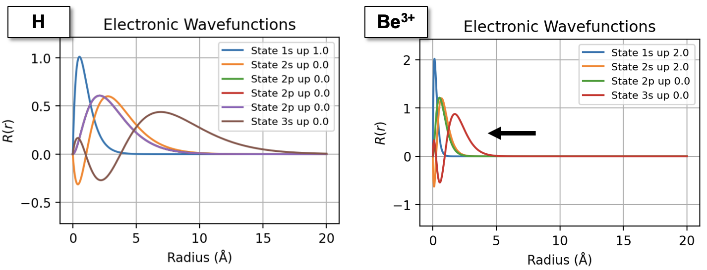
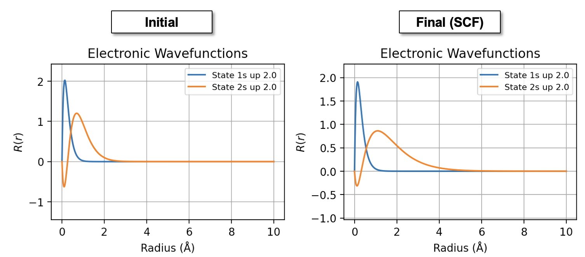

하트리-폭(Hartree-Fock) 계산
Contents
- 준비하기
- 프로그램 설명
- 실습예제
1. 준비하기
이번 장에서는 하트리-폭(Hartree-Fock) 방법을 통해 다양한 원자의 전자구조를 계산하는 방법에 대해서 설명한다. 이를 위해서 사용자는 다음의 코드를 자유롭게 활용할 수 있다:
- Edison Platform: https://nanornd.edison.re.kr/ [Curriculum/MSDP/Hartree-Fock Solutions of Small Atomic Systems (Central-Field Approximation)]
- Google Colab: https://colab.research.google.com/github/yhkimlab/Class-NanoPhysics/blob/master/2025-Spring/HartreeFock.ipynb
Edison Platform을 사용하기 위해서는 해당 사이트에 로그인이 필요하다.
2. 프로그램 설명
해당 프로그램은 Steven E. Koonin & Dawn C. Meredith, Computational Physics: Fortran Version (Addison-Wesley, 1990) 책의 Project III: Atomic structure in the Hartree-Fock 장의 Fortran 코드를 기반으로 작성되어있다. 하트리-폭 방법은 다전자계의 파동함수를 단일 슬레이터(Slater) 행렬식으로 근사하고, 전자 간 상호작용을 평균장(mean-field) 방식으로 다루는 ab-initio 계산 방법이다. 해당 코드는 다음과 같은 원자 반경 r에 대한 1차원 방사(radial) 상에서의 하트리-폭 방정식을 다룬다:
해당 방정식을 자기일관장(self-consistent field, SCF) 알고리즘을 통해 반복적으로 풀이하여 수렴된 해를 얻을 수 있다. 이에 대한 대략적인 알고리즘 과정은 다음과 같다:

3. 실습예제
3-1. 단전자(Single-electron) 시스템: 수소 원자
수소 원자는 하트리-폭 등 수치적인 방법의 도입 없이 이론적으로 해를 정확히 풀수 있는 쉬운 시스템의 예이다. 이번 실습에서는 (1) 전자간 상호작용(하트리 및 교환항)을 고려하지 않는 경우와, (2) 하트리-폭을 통해 고려한 두 경우에 있어서 수소원자의 전자구조를 계산해본다.
(1) 전자간 상호작용을 고려하지 않는 경우
전자간 상호작용을 고려하지 않는 경우에는 다음과 같은 방정식을 따른다:
\(\left(-\frac{\hbar^2}{2 m} \frac{d^2}{d r^2}+\frac{l(l+1) \hbar^2}{2 m r^2}-\frac{e^2}{r}-\epsilon_{n l}\right) R_{n l}(r)=0\)
수소 원자에 대해 해당 방정식을 풀이하기 위해서 프로그램에 다음과 같은 입력값을 사용해본다:
입력값:
- Element = H
- Spin Polarized = True
- Coulomb = None
- Num Band = 12
- SCF Iter = 0
- Rmax = 20.0 Å
Coulomb = None을 통해서 전자간 상호작용이 없는 상황을 기술할 수 있다. 이 상황에서는 자기일관장 방법의 반복적인 계산이 필요하지 않으므로 SCF Iter은 0으로 설정하였다. Unoccupied 준위의 고유값을 확인하기 위해서 Num Band를 12로 설정하였다. 이제 결과를 살펴보자.
결과:
수소 원자의 에너지 준위:

수소 원자의 에너지 준위가 이론값과 일치하는지 확인해본다 \(E_n = -\frac{m_e e^4}{2 (4\pi \varepsilon_0)^2 \hbar^2} \cdot \frac{1}{n^2} = 13.6\ \text{eV} \cdot \frac{1}{n^2}\)
수소 원자의 파동 함수:

수소 원자의 방사(radial) 파동함수의 노드 수가 다음 관계를 만족하는지 확인해본다. \(nodes = n - l - 1\)
(2) 전자간 상호작용을 고려하는 경우(하트리폭 계산)
엄밀히 말해서 단전자의 경우 전자 간 상호작용은 존재하지 않지만, 임의의 단전자의 시스템에 대해서도 하트리-폭 계산을 수행 할 수 있다. 이를 위해서 다음과 같이 입력값을 설정해본다.
입력값:
- Element = H
- Spin Polarized = True
- Coulomb = Poisson
- Exchange = HF
- Num Band = 1
그 결과로 나온 에너지 중에서 전자간 반발에 의한 하트리 에너지 VEETOT와 교환 효과에 의한 교환 에너지 VXCTOT를 비교해본다.
TOTALS
NE : 1.0
KTOT : 13.560381028126724 eV
VENTOT : -27.150347845570842 eV
VEETOT : 8.491855443685635 eV
VXCTOT : -8.492660406217787 eV
VENTOT + VEETOT + VEXTOT : -27.151152808102992 eV
Total Energy : -13.590771779976269 eV
하트리-폭 방법은 단전자에서 두 에너지가 정확히 상쇄되어 보통 single-electron self-interaction free하다고 한다.
3-2 다전자 시스템: 베릴륨
(1) 베릴륨 이온(Be+3)
우선, 수소 원자와 마찬가지로 전자간 상호작용을 고려하지 않았을때의 결과를 살펴보자:
Repeat Exercise 3-1 for Be atom, using same input
결과:
베릴륨(+3) 원자의 에너지 준위:

수소 원자와 마찬가지로 베릴륨 이온(+3)은 전자가 없으므로 에너지 준의는 다음과 같은 분석적 해를 통해 구할 수 있다:
\(E_n = -\frac{m_e e^4}{2(4\pi \varepsilon_0)^2 \hbar^2} \cdot \frac{Z^2}{n^2}= 217.6\ \text{eV} \cdot \frac{1}{n^2}\)
베릴륨(+3) 원자의 파동 함수:

수소 원자와 비교했을때 파동 함수의 모양이 어떻게 바뀌었는지 확인해보자
(2) 베릴륨 중성 원자
이제 전자 효과를 포함한 베릴륨 중성 원자에 대해서 계산을 수행해보자.
입력값:
- Element = Be
- Spin Polarized = True
- Coulomb = Poisson
- Exchange = HF
- Rmax = 10A
결과:
베릴륨 원자의 파동함수:

베릴륨 이온과 비교했을때 파동함수가 어떻게 변화했는지 확인해보자
3-3. 교환-상관 에너지 범함수
하트리-폭과 비슷한 대표적인 제1원리 전자구조 계산 방법론으로 밀도범함수론(density functional theory, DFT)가 있다. 밀도범함수론은 핵심적으로 전자의 교환과 (하트리-폭에서 고려되지 않았던) 상관 효과를 밀도에 대한 범함수로 근사하여 더욱 적은 계산량으로 계산을 수행 할 수 있다.
(1) 단전자 시스템: LDA vs Hartree-Fock
이전 하트리-폭에서 계산하였던 수소 원자에 대해서 다음 입력값으로 밀도범함수론 계산을 수행해보자:
입력값:
- Exchange = LDA
- Correlation = None
이번 강의에서는 상관 효과는 고려하지 않는다.
결과:
전체 에너지:
TOTALS
NE : 1.0
KTOT : 12.390759695635145 eV
VENTOT : -25.937189833082538 eV
VEETOT : 8.004617751605624 eV
VXCTOT : -6.886537202933416 eV
VENTOT + VEETOT + VEXTOT : -24.81910928441033 eV
Total Energy : -12.428349588775186 eV
해당 결과를 하트리-폭 계산 결과와 비교해보자. 보통 밀도범함수론의 교환-상관 에너지 범함수는 두 에너지가 정확히 상쇄되는 조건을 만족하지 않는데, 이를 만족하게 보정하는 self-interaction correction (SIC) 방법이 있다.
(2) 두-전자(two-electron) 시스템: 수소원자 이온(H-)
다전자 효과를 확인하기 위한 대표적인 시스템이 두-전자 시스템이다. 우리는 이를 계산하기 위해서 수소 음이온(-) 고려할 것이다. 우선, 비교를 위한 하트리-폭 계산을 수행한다. 이를 위한 입력값은 다음과 같다:
입력값:
- Element = H
- Exchange = Hartree–Fock
- Num Elec = 2.0
- Rmax = 20
결과:
전체 에너지:
TOTALS
NE : 2.0
KTOT : 13.231036809428883 eV
VENTOT : -37.239430446769695 eV
VEETOT : 21.49449040071572 eV
VXCTOT : -10.747770295510863 eV
VENTOT + VEETOT + VEXTOT : -26.492710341564838 eV
Total Energy : -13.261673532135955 eV
Results Plot
단전자 경우와 마찬 가지로
VEETOT과VXCTOT의 관계를 살펴본다.
그 다음으로 LDA를 통한 밀도범함수론 계산을 수행해본다:
입력값:
- Element = H
- Exchange = LDA
- Correlation = None
- Num Elec = 2.0
- Rmax = 20
결과를 살펴보면, 교환 에너지가 충분히 크지 않아서 계산이 제대로 이뤄지지 않는 것을 확인할 수 있다. 이는 근본적으로 LDA 교환 포텐셜이 진공상에서 하트리-폭에 비해 급격히(exponential) 감소하는 효과 때문이다. 이에 대한 정확한 조건은 r이 증가할 수록 포텐셜이 1/r의 점근적인 개형(asymptotic behavior)을 따라가는 것이다. 이러한 조건은 밀도범함수론 교환 포텐셜을 설계하는데 토대가 되는 중요한 지표가 된다.
두-전자 시스템에 대해서 하트리-폭 방법과 LDA 밀도범함수론을 비교하기 위해서 LDA에서 수렴이 되지 않는 H- 이온 경우 대신, 중성 He 원자를 계산할 수 있다.
입력값:
- Element = He
- Exchange = LDA
- Correlation = None
- Num Elec = 2.0
- Rmax = 20